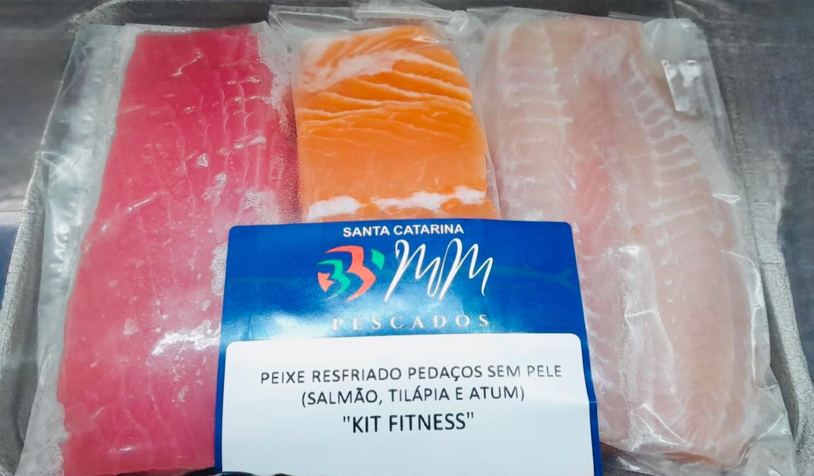
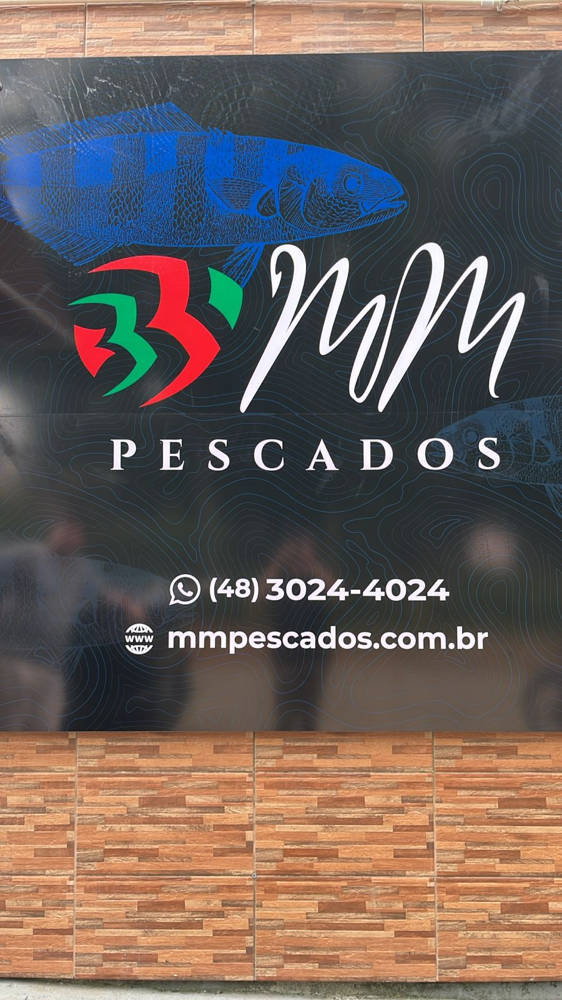

Para reunir quem você ama
Monte seu kit especial do mar.
Combinações selecionadas para almoços, comemorações e fins de semana.
Montar meu kitPeixes selecionados, frutos do mar e cortes especiais com a qualidade de quem conhece cada detalhe do pescado.
Apresente o cupom de boas-vindas no WhatsApp e aproveite uma condição exclusiva na sua primeira compra.
Explore nosso catálogo e peça atendimento personalizado pelo WhatsApp.

A MM Pescados nasceu com uma missão simples: aproximar as pessoas de pescados realmente bons. Hoje, em nossa sede própria em Florianópolis, atendemos famílias, restaurantes, hotéis e parceiros comerciais.
Da escolha do pescado à entrega, tudo é pensado para preservar sabor, segurança e confiança.
Pescados escolhidos com atenção à procedência, aparência e padrão de qualidade.
Certificação oficial, fiscalização sanitária e rastreabilidade para maior segurança.
Armazenamento e conservação adequados para preservar sabor e características do produto.
Converse com nossa equipe e encontre o produto ideal para cada ocasião.
“Atendimento rápido, entregam em domicílio e peixes de qualidade!”
“Encontramos um parceiro que realmente entende a necessidade de uma cozinha profissional. Padrão excelente.”
“Os filés são ótimos e os kits facilitaram muito nossa rotina. Atendimento próximo, do jeito que a gente gosta.”
Rua Deputado Walter Gomes, 340 — Santo Antônio de Lisboa
Florianópolis, SC · CEP 88050-501